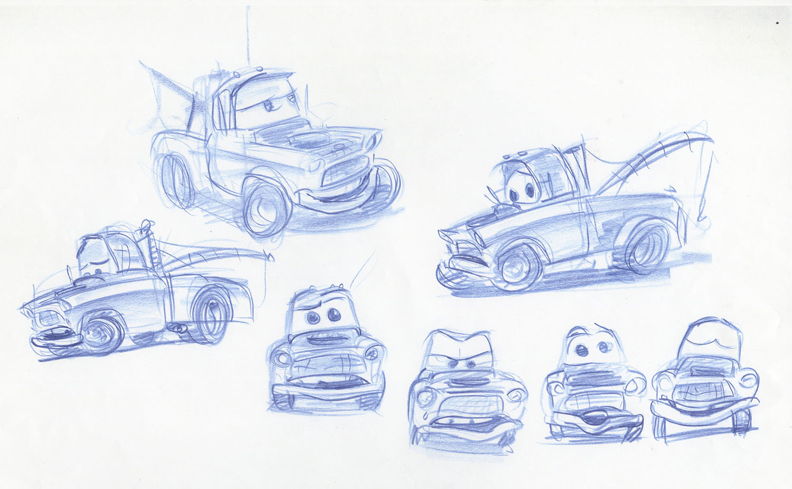

Tow Mater
Mater is a brown, former baby blue, 1955 Haulital Hook'em and Lightning McQueen's best friend.
One of his favorite activities is to go Tractor Tipping at night, as it's his favorite hobby.
Mater's catchphrases are "Dad gum!", "If I'm lyin', I'm cryin'!", and "Git-R-Done!" (the last one being his voice actor's signature phrase).
One of his favorite activities is to go Tractor Tipping at night, as it's his favorite hobby.
Mater's catchphrases are "Dad gum!", "If I'm lyin', I'm cryin'!", and "Git-R-Done!" (the last one being his voice actor's signature phrase).



Personality
-
Mater speaks with a somewhat high-pitched thick rural Southern accent, has a whistle dry lisp to his voice, and frequently misspells words.
He is very optimistic and often at times forgetful.
He has got the biggest heart, and is sweet to a fault.
He also has true unconditional or agape love for others, and just needs true friendship from other people.
He can be extremely scared or skittish at times because of his sensitive nature, and from being constantly and harshly abused by Bubba in his past.
Specifications
- Top Speed : 90 mph
- Zero - 60 mph : 10 seconds
- Engine Type : V-8 with two-barrel carburetor
- Horsepower : 200
Trivia
- Mater's license plate is A113, a recurring number in Pixar movies.
- Mater, along with other countless versions of him, have been released in the Cars, Cars Toons and Cars 2 Die-Cast Lines.
- Mater and Ivan are the only characters in Cars 2 that are tow trucks.
- During the credits' roll of Cars 2, Mater's passport scrolls past. His birth date is listed on it. It turns out to be the same as John Lasseter’s: January 12, 1957.
- During the last section of the World Grand Prix, Mater is described as the World's greatest backwards driver.
Gallery